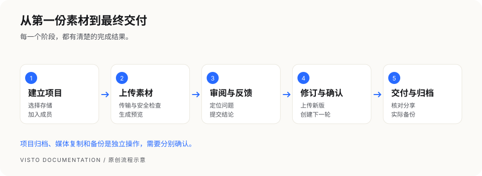

文档中心 / 开始使用
MAKE THE NEXT FRAME
从一份素材，
到一次明确的交付。
让项目、版本与反馈形成完整记录。按你的角色开始，或查找眼前要完成的操作。
27 个章节真实界面 + 原创图解支持离线阅读
本版适用于当前 Server 工作台；提供 Apple Silicon macOS、Windows x64、Linux amd64 / ARM64 与 Docker 部署说明；各平台验收边界单独标明。正式包、平台支持和下载入口、支持范围与已知限制以对应 Release 为准。
01 / 项目主管与成员
做完第一个项目 →
建立项目、上传素材、发起审阅、修订新版，再交付与归档。
02 / 安装维护者部署你的 Visto →
安装 Server 与视频运行时，建立工作空间并安排备份。
03 / 客户与合作方开始外部审阅 →
从链接进入，查看正确版本，用时间和画面定位反馈。
04 / 遇到问题按现象找到答案 →
页面、上传、预览、存储、分享、更新和恢复排查。


完整阅读目录
- 01先理解 Visto
- 02做完你的第一个项目
- 03熟悉工作台
- 04安装前的准备
- 05Apple Silicon macOS 安装
- 06Windows x64 安装与维护
- 07Linux amd64 / ARM64 安装与维护
- 08安装视频处理运行时
- 09Docker 部署说明
- 10首次设置与登录
- 11配置文件保存位置
- 12创建与管理项目
- 13成员、邀请与权限
- 14上传、搜索与整理素材
- 15回收站、归档与删除
- 16版本管理与新一轮修订
- 17创建一轮审阅
- 18提交精确反馈与审核结论
- 19创建、安全检查与撤销分享
- 20给外部审阅者的操作指南
- 21通知、个人资料与活动
- 22网络与远程访问
- 23备份：保护数据库与媒体
- 24更新、恢复、回滚与卸载
- 25按现象排查问题
- 26常见问题
- 27交付检查单与求助模板
保存与离线使用
多页版本从 index.html 打开；完整文件夹可放在静态服务器上。单文件版把配图、样式和搜索都嵌在一个文件里，直接打开就能阅读。